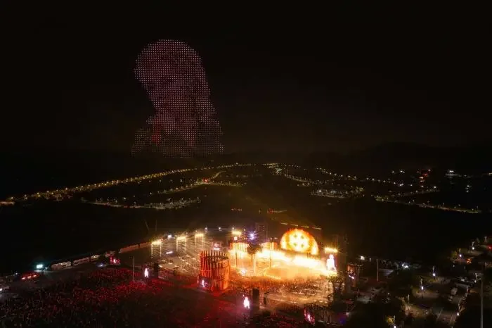
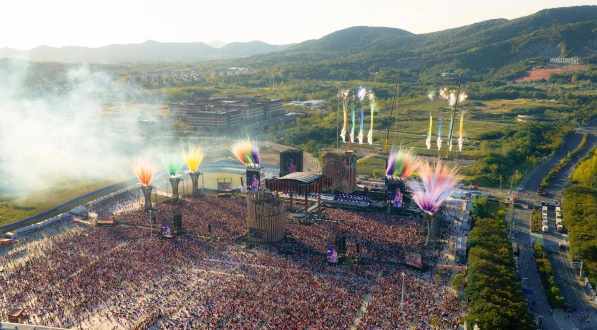
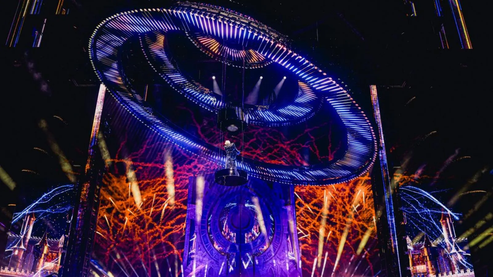

现场 / LIVE
10.25
2026
2026
把火星，唱成现场。
从 2013 年的选秀舞台，到南京汤山的第 100 场个人演唱会。这里收好他的近期行程、微博与抖音上的热议，以及那些只在现场发生的瞬间。
NOW ON MARS / 2026.11.01
从一首新歌、一次刷屏的无人机，到一座正在生长的乐园。三条线索，拼出最近的华晨宇。
ON THE ROAD / RECENT DATES
2026 火星演唱会乐园 2.0 以 52 天 13 场驻场南京。最后四场，神秘歌单，和一个必须记住的第 100 场。
这个筛选下暂时没有行程，换个分类看看。
HOT SIGNAL / WEIBO + DOUYIN
不追每一条热搜，只留下真正有画面的讨论。切换平台，或直接搜一个关键词。
LIVE ARCHIVE / NANJING 2026
环状舞台、双生歌单、无人机与烟花。南京的 52 天，把「火星乐园」从概念变成一座可以走进去的城。


白歌单 / DAYLIGHT SET
DAYLIGHT / AFTERNOON SET
不插电、即兴、松弛。白天的火星乐园更像一场大型聚会，全员站票，想唱就跟着唱。
按日夜氛围编排的概念歌单，非官方曲目单；现场以实际演出为准。
LIVE CUTS / 05 FRAMES
DISCOGRAPHY / SIX STUDIO ALBUMS
从卡西莫多的孤独，到量变临界点的自我突破。六张录音室专辑，六套视觉与声音系统。点击封面，进入专辑档案。
THE FILE / 2013—2026
从选秀舞台上的《无字歌》，到一座可以住进去的火星乐园。十三年，舞台越来越大，表达仍然很自我。
《快乐男声》全国总冠军，以极具辨识度的表达正式出道。
首个火星演唱会 IP 落地，属于他的现场叙事从此开始。
首创户外乐园模式个人演唱会，全员站票，音乐、游乐与艺术共享同一片场地。
海边日出演唱会，数万人一起等天亮。演唱会不只是夜晚的事。
南京 52 天 13 场，11 月 15 日收官。火星乐园 2.0，仍在生长。